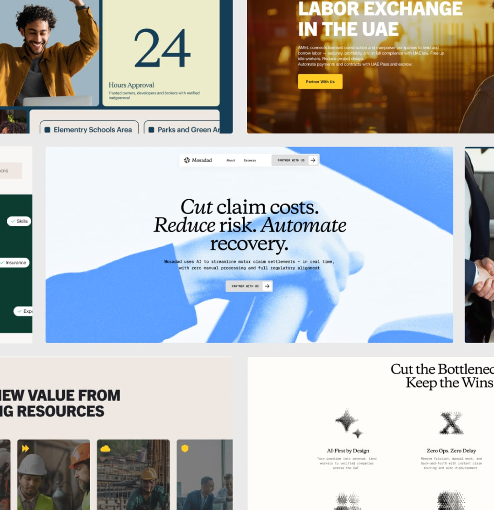
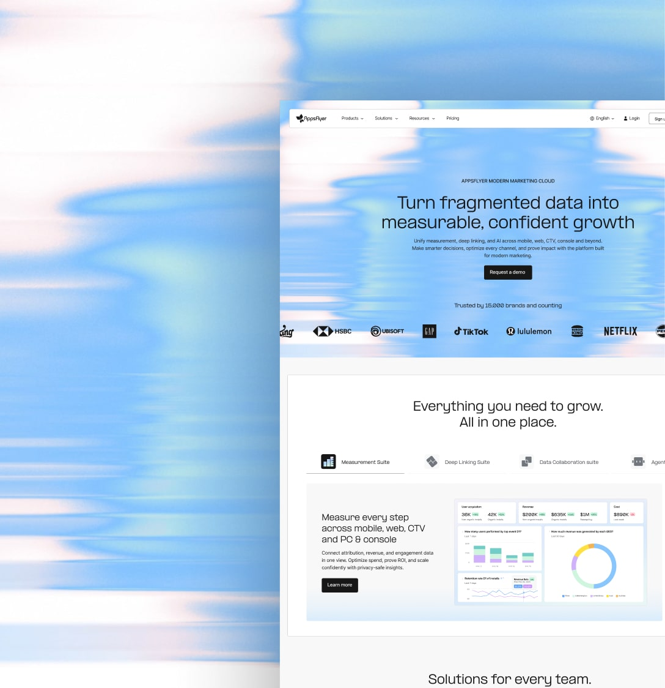
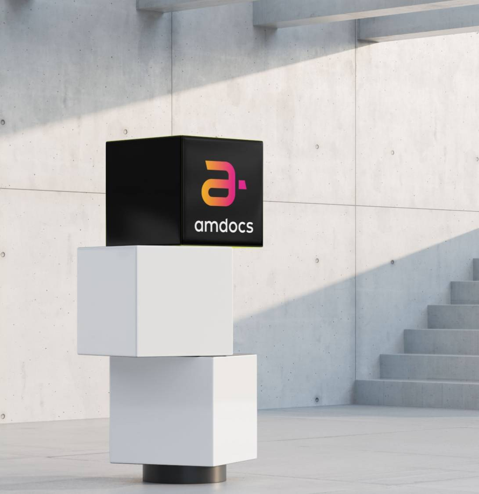

We help best in class companies to accelerate and optimize the design & creative process by focusing on outstanding design and not mundane tasks

Each discipline plugs into the next. Design systems make product design scale; DesignOps makes design systems hold; frontend makes the whole thing real. None of it stands alone.
Design systems as scalable product infrastructure — built to match your complexity. We design, build, and evolve design system infrastructure that supports your product exactly where it is today, and scales as complexity grows.
SEE MORE- Component Design & Development
- Design System Architecture
- Token Strategy & Implementation
- Multi-Brand / Multi-Platform Systems
- Contribution & Governance Models
- Continued support and maintenance
Design Ops aligns people, decisions, and systems so design can scale without friction. We help organizations move from individual excellence and ad-hoc processes to a clear, shared way of operating across design, product, and engineering. This isn't about adding process. It's about creating clarity, ownership, and decision confidence.
SEE MORE- Organizational Design for Designers, Product & Dev
- Decision-Making Frameworks
- Design Governance & Responsibility Models
- Operating Cadences & Rituals
- Cross-discipline Alignment (Design × Product × Engineering)
- Design teams Figma training
- Design system and Team Audit
We define clear product direction and translate it into system-aware product design. From early concepting and validation to usable interfaces — while continuing to support teams as products evolve, scale, and expand.
SEE MORE- Product Vision & Direction Definition
- Product Design
- Early-Stage Concepting & Validation for product expansion
- Continued support and maintenance
Designed for teams that need a focused, functional brand identity and a strong initial website presence — supporting real decisions in communication, structure, and growth. We define how the brand should look, feel, and communicate, then translate it into a usable website.
SEE MORE- Product Positioning & Brand Principles
- Visual Direction & Design Rationale
- Creative Planning & Concept Visualization
- Refinement of Core Brand Elements
- System-Ready Visual Language Foundations
We believe frontend and automation work only creates long-term value when it is built on top of clear product foundations, design systems, and operating models. This ensures that everything we ship — code, components, tools, and automations — is intentional, consistent, and scalable, rather than tactical or ad-hoc.
SEE MORE- Frontend Development
- WordPress Development
- Storybook Setup & Maintenance for Component Libraries
- Custom Automations to Reduce Mundane Tasks
- Internal Tools & Plugins
"Working with Kido was a game-changer for our brand and digital launch. They didn’t just help us execute design, they partnered in building a scalable design system and website infrastructure while brand work was still in motion.
Together we defined UX and content hierarchy, tokenized visual language and built a scalable design system in Figma, redesigned core pages, and updated 1,000+ marketing pages, all without slowing us down.
The result was a fast, consistent, future-ready site and system that empowered our internal team, accelerated delivery, and aligned brand and implementation in real time, exactly what our ambitious launch demanded."
Hagar Nahum Brockmann
Senior Director of Design & Creative
AppsFlyer
“When I first spoke with Karen and Ido, I told them straight up—I’m super skeptical about an external studio running the Design Ops. I figured, at best, they could help us skip some of the learning curves our in-house designers were facing because, in the end, this kind of role has to live inside the company, A studio can offer best practices and a holistic view, but there’s no way they can really deal with the messy reality of working across designers, devs, PMs, and biz teams. Yep, I have this habit of saying a lot of stupid things...
We kicked things off with research and workshops, built workflows, mapped out a roadmap, ran stakeholder sessions, and boosted our Figma game and collaboration—Kido was everywhere, at every level, from high-level strategy to the tiniest day-to-day. Once the roadmap was set, it was clear they weren’t going anywhere—and that they shouldn’t.
The strongest success metric? Not just the time we saved (a lot), the improved delivery (yep), or even the professional growth across the team (big time). It’s the people’s faces when they think Kido might leave. Once you start working with them, there’s no going back, somewhat like Jack once said: Because deep down, in places you don’t talk about at Configs, you want them in that mess — you need them in that mess!“
Yaron Yativ
Product Design Director
Natural Intelligence
“Working with Kido has been a true game changer for us. They helped us take an early version of our design system — one that didn’t quite match how we work — and turn it into something that actually fits our day-to-day needs. They brought in best practices and a fresh perspective, kept things practical, and made sure the whole team was part of the process.
On top of that, Kido's team have been amazing partners on different product design projects — thoughtful, collaborative, and always focused on what really matters. The team at Kido brings innovative ideas to the table, knows exactly when to push forward and when to pause and reflect, and their deliverables are consistently of the highest quality you could ask for. It honestly feels like they’re part of the team.“
Noa Karni
Director of User Experience
Akamai
“I am pleased to highly recommend Kido, who collaborated with us at Mivtach Simon on a strategic digital project aimed at conceptualizing and defining the vision for an agency web application.
Throughout the discovery phase, the Kido team demonstrated a methodological, thorough, and insightful approach. Their professionalism and innovative thinking enabled them to successfully pinpoint the precise direction needed for an effective application tailored to a large-scale insurance agency such as Mivtach Simon.
Working with Kido was characterized by excellent communication, strong commitment to project success, and the ability to effectively manage complex challenges under tight deadlines. Their efforts significantly contributed to the project's clarity and strategic direction, delivering outstanding results that exceeded our expectations.
I confidently recommend Kido to any organization seeking a dedicated, reliable, and creative partner for their digital initiatives.“
Anna Cohen Yashar
Product Team Lead
Mivtach Simon Insurance Agency
“Our journey with Kido began due to a simple plugin - Left-to-Right - which opened the door for us at Maccabi Healthcare to adopt Figma – the industry standard. Our other goal was to use Figma as a foundation for building a design system across our many products, and to improve the design system already in production.
To do so in the most professional and effective way, we approached Ido and the team for a training workshop and a few consulting hours. But what started as a one-time collaboration quickly grew into a long-term, trusted partnership. The Kido team didn’t just advise — they got in the trenches with us. From building pixel-perfect components, through driving complex organizational processes, to delivering handoffs for development — they have been with us every step of the way. There are many opportunities ahead, more challenges to meet — but the road is paved, and we’re walking it together.
To us, Kido became a part of our small talented team. Experts in design systems, with deep understanding of both design and development. Together, we’re creating better products and delivering smarter, faster solutions to our users — and that’s what it’s all about.“
Michal Yehudai
Head of Digital Design Studio
Maccabi Healthcare

GCC
Systemized Branding at Speed: 3 Sites in 10 Weeks

AppsFlyer
Brand Reposition Implementation - Building While Shipping
